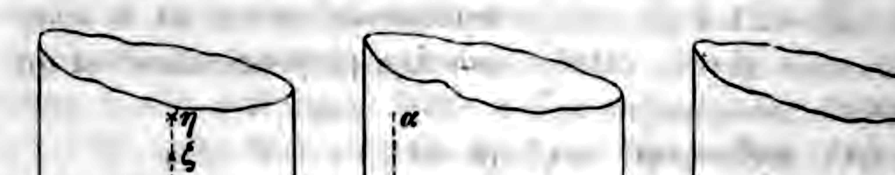

Single-Compass Constructions and Five-Point Conics¶
Synagoge Book VIII, Chapters 27–41 (Hultsch III, pp. 1072–1096) · Critical English Edition
f. 0081 · p. 1072Instrumental Problem on a Cylinder.
27 (Prop. 13). Now the problems called instrumental in mechanics
f. 0083 · p. 1074problems are removed from geometrical power, such as those drawn with a single compass opening and the problem proposed by architects concerning a cylinder mutilated at both bases. For they demand, when part of the surface of a right cylinder is given, of which no sound portion of the circumferences at the bases


is preserved, to find the thickness of the cylinder, that is, the diameter of the circle from which the cylinder took its generation. And it is found by the following method.
28. Let two points \(A, B\) be taken on the given surface, and with them as centers and with one compass opening let point \(\Gamma\) first be marked on the surface; and again with the same centers \(A, B\) and an opening greater than the former let \(\Delta\) be marked, and with another opening \(E\), and with another \(Z\), and with another \(H\). Then the five points \(\Gamma, \Delta, E, Z, H\) will lie in one plane, because the straight line joining each of them as vertex of an isosceles triangle to the bisection of the straight line joining \(A, B\) as common base of the triangles is perpendicular
f. 0085 · p. 1076to \(AB\) (and the five straight lines come to be in one plane, and clearly also the points \(\Gamma, \Delta, E, Z, H\)). We shall lay these out into a plane thus: out of the three straight lines joining \(\Gamma, \Delta, E\) let the triangle \(\Theta K\Lambda\) be constructed in the plane, out of the three joining \(\Delta, E, Z\) the triangle \(K\Lambda M\), and out of the three joining the points \(E, Z, H\) let the triangle \(\Lambda MN\) be constructed; therefore the triangles \(\Theta K\Lambda, K\Lambda M, \Lambda MN\) will be laid out in place of the triangles \(\Gamma\Delta E, \Delta EZ, EZH\). If, then, we describe an ellipse about the points \(\Theta, K, \Lambda, M, N\), its minor axis will be the diameter of the circle that generated the cylinder.
29 (Prop. 14). Since it is sought to describe an ellipse about five given points \(\Theta, K, \Lambda, M, N\) lying in one plane, let it be circumscribed, and let the joining lines \(\Theta N, MK\) first be parallel, and let each of them be bisected at \(A, B\), and let \(AB\) joined be produced to the points \(E, Z\) of the ellipse; then \(EZ\) is a diameter of the ellipse by the tenth definition of the Conics, given in position; for each of the points \(A, B\) is also given in position. Let \(\Lambda\Xi\) then be drawn through \(\Lambda\) parallel to \(EZ\), and let \(\Xi K, \Lambda M\) joined meet \(\Theta N\) produced at \(\Pi, H\); therefore \(\Gamma, H\) are given (for each of \(\Lambda, M,\)
f. 0087 · p. 1078\(\Theta, N\) is given). And since as the rectangle \(\Xi\Delta\Lambda\) is to the rectangle \(M\Lambda K\), so is the rectangle \(\Xi\Gamma\Lambda\) to each of the rectangles \(H\Gamma\Pi, N\Gamma\Theta\), therefore the rectangle \(H\Gamma\Pi\) will be equal to the rectangle \(N\Gamma\Theta\). And the rectangle \(N\Gamma\Theta\) is given (for each is given); therefore \(\Pi\) is given. But \(K\) is also given; therefore \(K\Pi\Xi\) is given in position. But \(\Lambda\Gamma\Xi\) is also given in position; therefore \(\Xi\) is given. And it is on the ellipse. Let \(N\Xi, \Lambda\Theta\) joined meet the diameter \(EZ\) produced at \(P, \Sigma\); then again as the rectangle \(N\Gamma\Theta\) is to the rectangle \(\Xi\Gamma\Lambda\), so is the rectangle \(NA\Theta\) to each of the rectangles \(PA\Sigma, EAZ\), and on this account the rectangle \(PA\Sigma\) is equal to the rectangle \(EAZ\).

And the rectangle \(PA\Sigma\) is given (for \(PA, A\Sigma\) are given); therefore the rectangle \(EA \cdot AZ\) is also given. In the like manner the rectangle \(EBZ\) will also be shown to be given. And \(A, B\) are given; therefore \(E, Z\) are also given, as will be shown next; so that the diameter \(EZ\) is given in magnitude. And it is clear that its conjugate is also given; for the ratio of the transverse \(EZ\)
f. 0089 · p. 1080to its latus rectum is given, being the same as the ratio of the rectangle \(EAZ\) to the square on \(AN\).
30 (Prop. 15). The deferred lemma. Let each of the rectangles \(A\Gamma B, A\Delta B\) be given, and let \(\Gamma, \Delta\) be given; to show that \(A, B\) are given.
For let the rectangle \(\Delta\Gamma E\) be equal to the rectangle \(A\Gamma B\), and the rectangle \(\Gamma\Delta Z\) equal to the rectangle \(A\Delta B\); therefore as \(\Gamma E\) is to \(EA\), so is \(AZ\) to \(Z\Delta\) (for by the construction each ratio is the same as that of \(\Gamma B\) to \(B\Delta\)); therefore the rectangle \(E\Gamma \cdot Z\Delta\) is equal to the rectangle \(EAZ\), so that the point \(A\) is also given. Likewise also \(B\).
31 (Prop. 16). Now let the lines joining the given points \(N, \Theta, M, K\) on the ellipse not be parallel, and let \(NK, M\Theta\) joined cut one another at \(T\), and through \(\Lambda\) let \(\Lambda Y\Phi\) be drawn parallel to \(M\Theta\); then the ratio of the rectangle \(NYK\) to the rectangle \(\Lambda Y\Phi\) will be given (for it is the same as that of the rectangle \(NTK\) to the rectangle \(MT\Theta\)). And the rectangle \(NYK\) is given; therefore the rectangle \(\Lambda Y\Phi\) is also given; and \(\Lambda, Y\) are given; therefore \(\Phi\) is given. Thus it is reduced to the foregoing problem, to describe about five points \(N, M, \Lambda, \Phi, \Theta\) the ellipse \(NM\Lambda\Phi\Theta\) with \(M\Theta, \Phi\Lambda\) assumed parallel.
f. 0091 · p. 108232 (Prop. 17). When any conjugate diameters whatever of an ellipse have been obtained, it is easy to find its axes instrumentally. The method is carried out in this way.
Let the previously found conjugate diameters of the ellipse \(AB, \Gamma\Delta\) be laid out bisecting one another at \(E\), and through \(A\) let \(ZH\) be drawn parallel to \(\Gamma\Delta\), let the rectangle \(EA\Theta\) be made equal to the square on \(\Delta E\), and let \(E\Theta\) be bisected at \(K\); then \(K\) will lie between \(A\) and \(\Theta\) (for \(\Delta E\) is greater than \(EA\)), and at right angles to \(E\Theta\) from \(K\) let \(K\Lambda\) be drawn cutting \(ZH\) at \(\Lambda\), and let the circumference of a circle described about center \(\Lambda\) through \(E\) cut \(HZ\) at \(Z, H\), and let \(EH, EZ\) be joined, and upon them let perpendiculars \(AM, AN\) be drawn, and let each of the squares on \(EO, E\Pi\) be placed equal to the rectangle \(HEM\), and each of the squares on \(EP, E\Sigma\) equal to the rectangle \(ZEN\); therefore the axes of the ellipse \(O\Pi, P\Sigma\) will have been found, of which the
f. 0093 · p. 1084least will be equal to the thickness of the cylinder, as was said at the beginning.
33 (Prop. 18). When a sphere aloft has a given position with respect to the underlying plane, to find both the point upon which it falls when carried vertically downward (and the point according to which it falls) and the least segment cut off from the perpendicular between the two points, that on the surface of the sphere and that on the plane. As a preliminary problem, when a circle aloft is given not in a plane at right angles to the underlying plane, to find both the common section of both planes and their inclination.
34. Let there be a circle aloft, and let three points \(A, B, \Gamma\) be taken upon it, and let perpendiculars be drawn from them to the underlying plane. They will be drawn thus: let a straight line falling from \(\Gamma\) to the underlying plane, as \(\Gamma\Delta\), be carried round and touch the plane at
f. 0095 · p. 1086two other points \(E, Z\), and let the center \(K\) of the circle about \(\Delta, E, Z\) be taken; the perpendicular from \(\Gamma\) will therefore fall upon the point \(K\), and \(K\) will be given. Let perpendiculars \(B\Theta, A\Lambda\) likewise be drawn from \(A, B\); let \(K\Lambda, \Theta\Lambda\) joined be produced, and let it be made so that as \(\Gamma K\) is to \(A\Lambda\), so is \(KM\) to \(M\Lambda\), and as \(B\Theta\) is to \(A\Lambda\), so is \(\Theta O\) to \(O\Lambda\) (therefore \(M, O\) are given; for it is in our power to take such perpendiculars that one among them is least, as \(A\Lambda\)); therefore \(MA\Gamma, BAO\) are straight lines. And they will be in the plane of the circle \(AB\Gamma\); therefore the common section of it and of the underlying plane is \(MO\). Let \(\Lambda N\) be drawn from \(\Lambda\) perpendicular to \(MO\), and let \(AN\) be joined; then \(AN\) will also be perpendicular to \(MO\); therefore the angle \(AN\Lambda\), the inclination of the planes, has also been obtained.
35 (Prop. 19). This having been shown beforehand, let there be a sphere aloft, and let it be proposed to find both the point upon which it will fall when carried vertically downward to the underlying plane and the least segment cut off from the perpendicular between the surface and the plane.
Let the sphere lie aloft about center \(E\),
f. 0099 · p. 1088and let some great circle \(AB\Gamma\) be inscribed in it; then either it will be in a plane at right angles to the underlying plane or not, and we shall know this thus: taking any three points on its circumference, we shall draw perpendiculars to the underlying plane, as we have learned; and if the points upon which the perpendiculars fall are in a straight line with one another, the planes will be at right angles to one another, but if not, inclined.
36. First let them be at right angles, and from the points \(A, \Gamma\) let perpendiculars \(A\Delta, \Gamma H\) be drawn; then either they will be equal or not.
Let them be equal, and let \(\Delta H\) joined be bisected at \(Z\); then \(Z\) will be the sought point in the plane, and the bisection \(B\) of the circumference \(AB\Gamma\) on the surface will correspond to \(Z\), and \(BZ\) will be the least perpendicular, as was said before.
37 (Prop. 20). Now let the perpendiculars not be equal, but let \(A\Delta\) be least, and let it be made so that as \(\Gamma H\) is to \(A\Delta\), so is \(H\Theta\) to \(\Theta\Delta\), when \(H\Delta\) is produced; then \(\Theta\) will be the point where the line from \(\Gamma\) to \(A\) meets the underlying plane, and both the straight line \(A\Theta\) and the angle \(A\Theta\Delta\) will be given. These things having been done, let a circle equal to the great circle be laid out
f. 0101 · p. 1090about diameter \(K\Lambda\), and let \(\Lambda M\) be adjoined equal to \(A\Theta\), and equal to the angle \(A\Theta\Delta\) let the angle \(KMN\) be constructed, and from \(K, \Lambda\) perpendiculars \(\Lambda O, KN\), and from the center \(\Sigma\Pi\), and equal to the circumference \(\Lambda P\) let \(AB\) be cut off, and equal to the straight line \(O\Pi\) let \(\Delta Z\) be cut off (which was the same as saying \(\Delta H\) is bisected at \(Z\)). Therefore \(Z\) will be the point upon which the sphere when carried down will fall, \(B\) the point on the surface, and \(BZ\) the least perpendicular.
38 (Prop. 21). Now let the circle \(AB\Gamma\) not be in a plane at right angles to the underlying plane, and let the common section \(\Delta\Theta\) of the planes be taken, and let points \(A, \Gamma\) lying diametrically opposite one another on the circle \(AB\Gamma\) be taken such that \(\Gamma A\) joined upon them meets the common section \(\Delta\Theta\) (for this is in my power because \(\Delta\Theta\) lies in the plane of the circle \(AB\Gamma\)). Let it meet it at \(\Theta\); then \(A\Theta\) and the angle \(\Theta\) are given. 39. From the center \(E\) let the perpendicular \(EB\Delta\) be drawn to \(\Delta\Theta\). It will be drawn thus: let
f. 0103 · p. 1092a circle \(HZ\Lambda\) equal to the great circle \(AB\Gamma\) be laid out about diameter \(ZH\), and let \(HK\) be adjoined equal to \(\Gamma\Theta\), and equal to the angle \(A\Theta\Delta\) let the angle \(ZKM\) be constructed, and from center \(O\) the perpendicular \(O\Lambda M\), and equal to the circumference \(H\Lambda\) let \(\Gamma B\) be cut off, and equal to the straight line \(KM\) let \(\Theta\Delta\) be cut off; then \(\Delta B\) is equal to \(M\Lambda\) and is perpendicular to \(\Delta\Theta\) and when produced falls upon the center \(E\); for these things are clear from similarity. Now let \(\Delta I\) be drawn at right angles to \(\Delta\Theta\) in the underlying plane; then \(\Delta\Theta\) is perpendicular to the plane through \(E, \Delta, I\), so that the circle \(AB\Gamma\) is also perpendicular to the plane through \(E, \Delta, I\); therefore the plane through \(E, \Delta, I\) produced will make in the sphere a great circle perpendicular to \(AB\Gamma\), falling through its poles and through the points \(B, O\), so that, if taking the pole \(\Pi\) of \(AB\Gamma\) we describe a
f. 0105 · p. 1094circle through \(\Pi\) and each of \(B, O\), this will be the great circle produced in the sphere (by the plane through \(O, \Delta, I\)). Let \(B\Pi O\) be described, and again let a circle \(PNT\) be laid out about diameter \(PT\), and let \(P\Phi\) be adjoined equal to \(B\Delta\), and equal to the angle \(B\Delta I\) the angle \(P\Phi\Xi\), and from center \(\Lambda\) the perpendicular \(\Lambda N\Xi\), and equal to the circumference \(PN\) let \(BY\) be cut off on the circle \(\Pi BO\), and equal to \(\Phi\Xi\) let \(\Delta I\) be cut off, and let \(IY\) be joined; then \(IY\) will be equal to \(\Xi N\) and when produced will fall upon the center \(E\) and will be perpendicular to the underlying plane, since it is also perpendicular to \(I\Delta\); therefore \(I\) will be the point upon which the sphere falls, \(Y\) that according to which it falls, and \(IY\) the least perpendicular.
40 (Prop. 22). Given a sphere and a point outside it, to find the point where the line joined from the given point to the center cuts the surface.
And it is evident: for if any straight line falling from the given point to the surface be carried round, it too will describe a circle and its pole will be the sought point.
41. Again let the sphere be assumed, and let two points both outside the surface be given, and let it be proposed to take the points where the line joining the given points cuts the surface.
f. 0107 · p. 1096For let the sphere lie about center \(B\), and let the given points outside be \(A, \Gamma\), and let the points where the lines joined from \(A, \Gamma\) to \(B\) meet the surface be taken as \(\Delta, E\), through which let a great circle \(\Delta EZH\) be described; therefore \(A\Delta, \Gamma E\) are given (for this is a lemma); and because the radius of the sphere is given, the whole lines \(AB, \Gamma B\) will also be given. And \(A\Gamma\), the line joining the given points, is also given. Out of the three lines \(AB, A\Gamma, \Gamma B\) therefore let the triangle \(\Theta K\Lambda\) be constructed, and about center \(\Theta\) let a circle \(\Sigma MNO\) be described equal to \(E\Delta ZH\). If this cuts \(K\Lambda\), it is clear that the line joined to \(A, \Gamma\) also cuts the sphere, but if not, it does not cut it. Let the circle then cut \(K\Lambda\) at \(M, N\), and equal to the circumference \(\Sigma M\) let \(\Delta H\) be cut off, and equal to \(ON\) let \(EZ\) be cut off. It is evident then that the points \(H, Z\) will be those where the line joining the points \(A, \Gamma\) cuts the surface of the sphere.